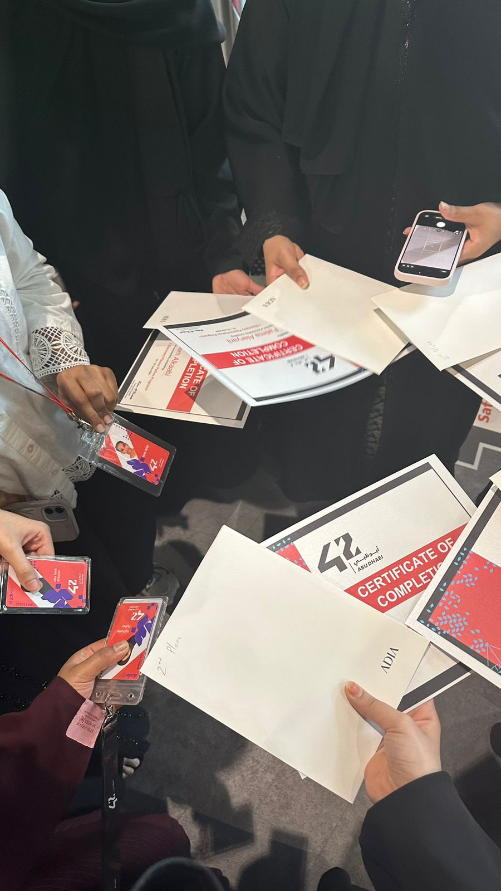

Experiences
Clubs, volunteering, and campus involvement outside the classroom.
Joined the CITA Club in my first year as a way to stay connected to the College of IT community beyond coursework, and have remained an active member throughout my time at UAEU.
As part of the organizing team, I assisted in planning and running college and club events and workshops.
Joined the Math Club to engage more deeply with mathematics outside of my CS coursework and connect with peers who share an interest in problem-solving and applied mathematics.
Participated regularly in club meetings and helped plan the club's participation in university-wide events.

Competed in an AI hackathon and achieved 2nd place among participating teams by developing HydroAI, a Farm-as-a-Service platform that enables users to design, deploy, and manage hydroponic farms using AI-assisted tools.
This experience strengthened my ability to work under time constraints, collaborate in a team environment, and translate technical solutions into practical real-world applications.